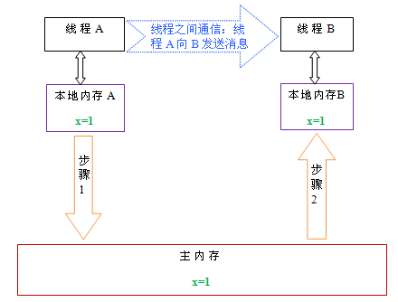

深入理解Java内存模型（一）——基础
本文属于作者原创，原文发表于InfoQ：http://www.infoq.com/cn/articles/java-memory-model-1
并发编程模型的分类
在并发编程中，我们需要处理两个关键问题：线程之间如何通信及线程之间如何同步（这里的线程是指并发执行的活动实体）。通信是指线程之间以何种机制来交换信息。在命令式编程中，线程之间的通信机制有两种：共享内存和消息传递。
在共享内存的并发模型里，线程之间共享程序的公共状态，线程之间通过写-读内存中的公共状态来隐式进行通信。在消息传递的并发模型里，线程之间没有公共状态，线程之间必须通过明确的发送消息来显式进行通信。
同步是指程序用于控制不同线程之间操作发生相对顺序的机制。在共享内存并发模型里，同步是显式进行的。程序员必须显式指定某个方法或某段代码需要在线程之间互斥执行。在消息传递的并发模型里，由于消息的发送必须在消息的接收之前，因此同步是隐式进行的。
Java的并发采用的是共享内存模型，Java线程之间的通信总是隐式进行，整个通信过程对程序员完全透明。如果编写多线程程序的Java程序员不理解隐式进行的线程之间通信的工作机制，很可能会遇到各种奇怪的内存可见性问题。
Java内存模型的抽象
在java中，所有实例域、静态域和数组元素存储在堆内存中，堆内存在线程之间共享（本文使用“共享变量”这个术语代指实例域，静态域和数组元
素）。局部变量（Local variables），方法定义参数（java语言规范称之为formal method
parameters）和异常处理器参数（exception handler
parameters）不会在线程之间共享，它们不会有内存可见性问题，也不受内存模型的影响。
Java线程之间的通信由Java内存模型（本文简称为JMM）控制，JMM决定一个线程对共享变量的写入何时对另一个线程可见。从抽象的角度来
看，JMM定义了线程和主内存之间的抽象关系：线程之间的共享变量存储在主内存（main
memory）中，每个线程都有一个私有的本地内存（local
memory），本地内存中存储了该线程以读/写共享变量的副本。本地内存是JMM的一个抽象概念，并不真实存在。它涵盖了缓存，写缓冲区，寄存器以及其
他的硬件和编译器优化。Java内存模型的抽象示意图如下：

从上图来看，线程A与线程B之间如要通信的话，必须要经历下面2个步骤：
1. 首先，线程A把本地内存A中更新过的共享变量刷新到主内存中去。
2. 然后，线程B到主内存中去读取线程A之前已更新过的共享变量。
下面通过示意图来说明这两个步骤：

如上图所示，本地内存A和B有主内存中共享变量x的副本。假设初始时，这三个内存中的x值都为0。线程A在执行时，把更新后的x值（假设值为1）临时存放
在自己的本地内存A中。当线程A和线程B需要通信时，线程A首先会把自己本地内存中修改后的x值刷新到主内存中，此时主内存中的x值变为了1。随后，线程
B到主内存中去读取线程A更新后的x值，此时线程B的本地内存的x值也变为了1。
从整体来看，这两个步骤实质上是线程A在向线程B发送消息，而且这个通信过程必须要经过主内存。JMM通过控制主内存与每个线程的本地内存之间的交互，来为java程序员提供内存可见性保证。
重排序
在执行程序时为了提高性能，编译器和处理器常常会对指令做重排序。重排序分三种类型：
1. 编译器优化的重排序。编译器在不改变单线程程序语义的前提下，可以重新安排语句的执行顺序。
2. 指令级并行的重排序。现代处理器采用了指令级并行技术（Instruction-Level Parallelism， ILP）来将多条指令重叠执行。如果不存在数据依赖性，处理器可以改变语句对应机器指令的执行顺序。
3. 内存系统的重排序。由于处理器使用缓存和读/写缓冲区，这使得加载和存储操作看上去可能是在乱序执行。
从java源代码到最终实际执行的指令序列，会分别经历下面三种重排序：

上述的1属于编译器重排序，2和3属于处理器重排序。这些重排序都可能会导致多线程程序出现内存可见性问题。对于编译器，JMM的编译器重排序规则会禁止
特定类型的编译器重排序（不是所有的编译器重排序都要禁止）。对于处理器重排序，JMM的处理器重排序规则会要求java编译器在生成指令序列时，插入特
定类型的内存屏障（memory barriers，intel称之为memory
fence）指令，通过内存屏障指令来禁止特定类型的处理器重排序（不是所有的处理器重排序都要禁止）。
JMM属于语言级的内存模型，它确保在不同的编译器和不同的处理器平台之上，通过禁止特定类型的编译器重排序和处理器重排序，为程序员提供一致的内存可见性保证。
处理器重排序与内存屏障指令
现代的处理器使用写缓冲区来临时保存向内存写入的数据。写缓冲区可以保证指令流水线持续运行，它可以避免由于处理器停顿下来等待向内存写入数据而产 生的延迟。同时，通过以批处理的方式刷新写缓冲区，以及合并写缓冲区中对同一内存地址的多次写，可以减少对内存总线的占用。虽然写缓冲区有这么多好处，但 每个处理器上的写缓冲区，仅仅对它所在的处理器可见。这个特性会对内存操作的执行顺序产生重要的影响：处理器对内存的读/写操作的执行顺序，不一定与内存 实际发生的读/写操作顺序一致！为了具体说明，请看下面示例：
| Processor A | Processor B |
|---|---|
| a = 1; //A1 x = b; //A2 |
b = 2; //B1 y = a; //B2 |
| 初始状态：a = b = 0 处理器允许执行后得到结果：x = y = 0 |
|
假设处理器A和处理器B按程序的顺序并行执行内存访问，最终却可能得到x = y = 0的结果。具体的原因如下图所示：

这里处理器A和处理器B可以同时把共享变量写入自己的写缓冲区（A1，B1），然后从内存中读取另一个共享变量（A2，B2），最后才把自己写缓存区中保存的脏数据刷新到内存中（A3，B3）。当以这种时序执行时，程序就可以得到x = y = 0的结果。
从内存操作实际发生的顺序来看，直到处理器A执行A3来刷新自己的写缓存区，写操作A1才算真正执行了。虽然处理器A执行内存操作的顺序
为：A1->A2，但内存操作实际发生的顺序却是：A2->A1。此时，处理器A的内存操作顺序被重排序了（处理器B的情况和处理器A一样，
这里就不赘述了）。
这里的关键是，由于写缓冲区仅对自己的处理器可见，它会导致处理器执行内存操作的顺序可能会与内存实际的操作执行顺序不一致。由于现代的处理器都会使用写缓冲区，因此现代的处理器都会允许对写-读操作重排序。
下面是常见处理器允许的重排序类型的列表：
| Load-Load | Load-Store | Store-Store | Store-Load | 数据依赖 | |
| sparc-TSO | N | N | N | Y | N |
| x86 | N | N | N | Y | N |
| ia64 | Y | Y | Y | Y | N |
| PowerPC | Y | Y | Y | Y | N |
上表单元格中的“N”表示处理器不允许两个操作重排序，“Y”表示允许重排序。
从上表我们可以看出：常见的处理器都允许Store-Load重排序；常见的处理器都不允许对存在数据依赖的操作做重排序。sparc-TSO和x86拥有相对较强的处理器内存模型，它们仅允许对写-读操作做重排序（因为它们都使用了写缓冲区）。
※注1：sparc-TSO是指以TSO(Total Store Order)内存模型运行时，sparc处理器的特性。
※注2：上表中的x86包括x64及AMD64。
※注3：由于ARM处理器的内存模型与PowerPC处理器的内存模型非常类似，本文将忽略它。
※注4：数据依赖性后文会专门说明。
为了保证内存可见性，java编译器在生成指令序列的适当位置会插入内存屏障指令来禁止特定类型的处理器重排序。JMM把内存屏障指令分为下列四类：
| 屏障类型 | 指令示例 | 说明 |
| LoadLoad Barriers | Load1; LoadLoad; Load2 | 确保Load1数据的装载，之前于Load2及所有后续装载指令的装载。 |
| StoreStore Barriers | Store1; StoreStore; Store2 | 确保Store1数据对其他处理器可见（刷新到内存），之前于Store2及所有后续存储指令的存储。 |
| LoadStore Barriers | Load1; LoadStore; Store2 | 确保Load1数据装载，之前于Store2及所有后续的存储指令刷新到内存。 |
| StoreLoad Barriers | Store1; StoreLoad; Load2 | 确保Store1数据对其他处理器变得可见（指刷新到内存），之前于Load2及所有后续装载指令的装载。StoreLoad Barriers会使该屏障之前的所有内存访问指令（存储和装载指令）完成之后，才执行该屏障之后的内存访问指令。 |
StoreLoad Barriers是一个“全能型”的屏障，它同时具有其他三个屏障的效果。现代的多处理器大都支持该屏障（其他类型的屏障不一定被所有处理器支持）。执行 该屏障开销会很昂贵，因为当前处理器通常要把写缓冲区中的数据全部刷新到内存中（buffer fully flush）。
happens-before
从JDK5开始，java使用新的JSR -133内存模型（本文除非特别说明，针对的都是JSR-
133内存模型）。JSR-133使用happens-before的概念来阐述操作之间的内存可见性。在JMM中，如果一个操作执行的结果需要对另一个
操作可见，那么这两个操作之间必须要存在happens-before关系。这里提到的两个操作既可以是在一个线程之内，也可以是在不同线程之间。
与程序员密切相关的happens-before规则如下：
- 程序顺序规则：一个线程中的每个操作，happens- before 于该线程中的任意后续操作。
- 监视器锁规则：对一个监视器锁的解锁，happens- before 于随后对这个监视器锁的加锁。
- volatile变量规则：对一个volatile域的写，happens- before 于任意后续对这个volatile域的读。
- 传递性：如果A happens- before B，且B happens- before C，那么A happens- before C。
注意，两个操作之间具有happens-before关系，并不意味着前一个操作必须要在后一个操作之前执行！happens-before仅仅要
求前一个操作（执行的结果）对后一个操作可见，且前一个操作按顺序排在第二个操作之前（the first is visible to and
ordered before the second）。happens-
before的定义很微妙，后文会具体说明happens-before为什么要这么定义。
happens-before与JMM的关系如下图所示：

如上图所示，一个happens-before规则通常对应于多个编译器和处理器重排序规则。对于java程序员来说，happens-before规则简单易懂，它避免java程序员为了理解JMM提供的内存可见性保证而去学习复杂的重排序规则以及这些规则的具体实现。
参考文献
- Programming Language Pragmatics, Third Edition
- The Java Language Specification, Third Edition
- JSR-133: Java Memory Model and Thread Specification
- Java theory and practice: Fixing the Java Memory Model, Part 2
- Understanding POWER Multiprocessors
- Concurrent Programming on Windows
- The Art of Multiprocessor Programming
- Intel® 64 and IA-32 ArchitecturesvSoftware Developer’s Manual Volume 3A: System Programming Guide, Part 1
- The JSR-133 Cookbook for Compiler Writers
关于作者
程晓明，Java软件工程师，国家认证的系统分析师、信息项目管理师。专注于并发编程。个人邮箱：asst2003@163.com。
原创文章，转载请注明： 转载自并发编程网 – ifeve.com本文链接地址: 深入理解Java内存模型（一）——基础

程晓明
Latest posts by 程晓明 (see all)
- 双重检查锁定与延迟初始化 - 2013年10月10日
- 深入理解Java内存模型（七）——总结 - 2013年3月16日
- 深入理解Java内存模型（六）——final - 2013年3月10日

 添加本文到我的收藏
添加本文到我的收藏

 (22 votes, average: 4.73 out of 5)
(22 votes, average: 4.73 out of 5)

{kind=link}
你好，作为一名刚入行的程序员来说，看你这篇文章其实挺吃力的，特别是重排序那块，整个文章读下来的感觉，线程之间的通信和svn的使用相 差不多，但是不知道，在2个线程之间发生 所谓的“冲突” 该如何处理，就像你描述在例子中 x=y=0的 ，你还是没有将如何操作才能得到我们所想要的结果呢，根据happens-before 这样的原则么，这个是不是和svn解决冲突是相类似的呢？
您好，谢谢您的关注。
在第二篇中专门讲了重排序，，这一篇已经在本站发布了。
您说的“冲突”，在java内存模型中称之为“数据竞争”。
对于多线程之间的数据竞争，只要我们正确使用同步原语（lock, volatile和final），那么java内存模型就会对有冲突的操作进行排序。这样就能得到我们想要的结果。第三篇会专门讲这个主题。
您好，看了您很多并发方面的文章感觉受益很多。
在原来看并发时一直有一个疑问就是happens-before是谁来保证的呢？是我们在开发过程中需要注意的地方？还是JVM中的一些策略呢？也可以说是：是不是在开发中不需要关注happens-before原则呢？
因为比如：程序顺序规则：一个线程中的每个操作，happens- before 于该线程中的任意后续操作。这种规则是我们在写代码的过程中是无法保证的，只能是JVM来保证。
请问happens-before到底是JVM中的一种策略还是我们在编写代码中需要注意的地方？
happens-before是我们在编写代码中需要注意的口诀。
谢谢您的关注。
腾飞的回答很简洁，也很精辟。
–happens-before是谁来保证的呢？
java内存模型通过限制编译器和处理器的重排序，来向程序员作出的内存可见性保证。
–程序顺序规则
程序顺序规则有两个作用：
1：java内存模型通过这个规则，可以向程序员保证：单线程内不会出现内存可见性问题（因为在程序顺序中的每个操作，都happens-before于它后面的操作）。
2：程序顺序规则与其他规则组合后，可以提供“额外”的保证。
比如在本文的第三章中的“volatile的写-读建立的happens before关系”这一节中，程序顺序规则与volatile规则及传递性规则三者组合后，可以保证：一个线程在写volatile变量之前可见的所有共 享变量，在接下来另一个线程读同一个volatile变量后，将立即变得对这个线程可见。
happens-before的主要作用在于：向程序员保证不同线程的操作之间的内存可见性。
比如：假设A线程中有一个操作a，B线程中有一个操作b，如果a，b之间具有happens-before关系，那么java内存模型将向程序员保证：a操作的执行结果，b一定能看到。
恍然大悟啊。看《java并发编程实战》那本书中，最不能明白的就是JMM中 【程序顺序规则】，
按照我的思维总觉得这个和指令重排序是矛盾的。看了这篇文章才明白。
太感谢了。
对这一块好像理解了，又好像没理解，看@草戊说理解了这块内容，@草戊,留个QQ或微信给我？想和你探讨一下
你好，看完之后豁然开朗。不过还是有两个疑问：
1.两个操作之间具有happens-before关系，并不意味着前一个操作必须要在后一个操作之前执行！
这句话是什么意思，感觉跟happen-before有冲突的样子，不是很理解。
2.一个线程在写volatile变量之前可见的所有共享变量，在接下来另一个线程读同一个volatile变量后，将立即变得对这个线程可见。
这个是volatile必然有的保障吗，JMM可以确保这个保障吗，还是一般实现支持它，但是JMM标准对它却没有定义？
1：
在《深入理解Java内存模型（二）——重排序》的“程序顺序规则”，和《深入理解Java内存模型（七）——总结》的“JMM的设计”中，对这个这个问题有说明，可以参考。
java内存模型向程序员保证：如果A happens-before B，那么A操作的结果将对B可见，且A的执行顺序排在B之前。
注意，这仅仅是java内存模型向程序员做出的保证！如果重排序A和B的执行顺序后，程序的结果不被改变，那么java内存模型就允许编译器和处理器对这两个操作重排序。
这么做的原因是因为：程序员对于这两个操作是否真的被重排序并不关心，程序员关心的是程序执行时的语义不能被改变（即执行结果不能被改变）。
因此，happens-before关系本质上和as-if-serial语义是一回事！
as-if-serial语义保证单线程内程序的执行结果不被改变；
happens-before关系保证正确同步的多线程程序的执行结果不被改变。
as-if-serial语义给编写单线程程序的程序员创建了一个幻境：单线程程序是按程序的顺序来执行的。
happens-before关系给编写正确同步的多线程程序的程序员创建了一个幻境：正确同步的多线程程序是按happens-before指定的顺序来执行的。
as-if-serial语义和happens-before关系这么做的目的是为了尽可能的开发并行度。
————————————
2：
从JDK5开始，这是volatile必然有的保障。
这是JMM规范的要求，所有的java实现都必须支持它。
您好，请问一下，关于重排序的那个例子，我写了代码验证，在反复执行100w次的情况下，都没有出现x=y=0的结果，难道是因为很难出现这种情况吗？我的代码如下：
public class TestReordering {
private int a = 0;
private int b = 0;
private class ThreadATask implements Runnable {
private int x;
public void run() {
a = 1; // A1
x = b; // A2
}
public int getX() {
return x;
}
}
private class ThreadBTask implements Runnable {
private int y;
public void run() {
b = 2; // B1
y = a; // B2
}
public int getY() {
return y;
}
}
public String doTest() throws InterruptedException {
ThreadATask taskA = new ThreadATask();
ThreadBTask taskB = new ThreadBTask();
Thread threadA = new Thread(taskA);
Thread threadB = new Thread(taskB);
threadA.start();
threadB.start();
threadA.join();
threadB.join();
return “x=” + taskA.getX() + “, y=” + taskB.getY();
}
/**
* @param args
* @throws InterruptedException
*/
public static void main(String[] args) throws InterruptedException {
Map counter = new HashMap();
for (int i = 0; i < Integer.parseInt(args[0]); i++) {
TestReordering test = new TestReordering();
String result = test.doTest();
Integer count = counter.get(result);
if (count == null) {
count = 0;
}
counter.put(result, count.intValue() + 1);
}
for (String result : counter.keySet()) {
System.out.println(result + ", count=" + counter.get(result));
}
}
}
你需要创造条件让两个线程尽可能的在同一时间点执行执行，才可能出现出现x=y=0的结果。
我稍微修改了一下你的测试程序，在我的笔记本电脑上（intel core i5 2410），很快（迭代1万多次后）就会出现这个结果。
启动JVM时，请设置为“-server”：在Eclipse中点击右键->Run Configurations->Arguments->VM Arguments
程序如下：
import java.util.concurrent.BrokenBarrierException;
import java.util.concurrent.Callable;
import java.util.concurrent.CountDownLatch;
import java.util.concurrent.ExecutionException;
import java.util.concurrent.ExecutorService;
import java.util.concurrent.Executors;
import java.util.concurrent.Future;
public class ReorderTest1 {
private int a = 0;
private int b = 0;
public static void main(String[] args) throws InterruptedException, ExecutionException {
ReorderTest1 rt = new ReorderTest1();
rt.doTest();
}
public void doTest() throws InterruptedException, ExecutionException{
ExecutorService executor = Executors.newFixedThreadPool(2);
for (int i = 1; i < 1000000; i++) {
CountDownLatch latch = new CountDownLatch(1);
Future futureA = executor.submit(new ThreadATask(latch));
Future futureB = executor.submit(new ThreadBTask(latch));
latch.countDown();
int x = futureB.get();
int y = futureA.get();
if (x == y) {
System.out.println(“x=” + x + ” : ” + “y=” + y);
System.out.println(“reorder in ” + i);
return;
}
//重置状态
a = 0;
b = 0;
}
//在此关闭线程池
}
private class ThreadATask implements Callable {
private CountDownLatch barrier;
public ThreadATask(CountDownLatch barrier) {
this.barrier = barrier;
}
public Integer call() throws InterruptedException, BrokenBarrierException {
barrier.await();
a = 1; // A1
return b; // A2
}
}
private class ThreadBTask implements Callable {
private CountDownLatch barrier;
public ThreadBTask(CountDownLatch barrier) {
this.barrier = barrier;
}
public Integer call() throws InterruptedException, BrokenBarrierException {
barrier.await();
b = 2; // B1
return a; // B2
}
}
}
使用CountDownLatch做栅栏没错，只不过不应该在主线程里面countDown。因为可能在子线程await之前就已经countDown了，达不到栅栏的效果。
但其实我试过了其他方法来使两个线程理论上达到“同时执行”的效果，都不行。总会存在某个线程在统计上压倒性的比另一个线程先执行，可能本身执行的指令就很少的缘故吧。不过确实存在指令重排序产生的两值都为零的情况。
还有我也试了volatile的内存屏障效果，在A1和B1之后只要插入一条任意的的volatile变量写操作就能阻止指令重排序产生的两值都为零的情况。
恩，确实如此，多谢耐心解答！
文章中说的抽象的线程本地内存和线程存放局部变量的栈不是同一个吧？
偶丰富了一下上边提到的例子：
package test034;
import java.util.concurrent.BrokenBarrierException;
import java.util.concurrent.Callable;
import java.util.concurrent.CountDownLatch;
import java.util.concurrent.ExecutionException;
import java.util.concurrent.ExecutorService;
import java.util.concurrent.Executors;
import java.util.concurrent.Future;
public class ReorderTest {
private int a = 0;
private int b = 0;
public static void main(String[] args) throws InterruptedException,
ExecutionException {
ReorderTest rt = new ReorderTest();
rt.doTest();
}
public void doTest() throws InterruptedException, ExecutionException {
ExecutorService executor = Executors.newFixedThreadPool(2);
//可能出现的结果（关注ThreadATask，ThreadBTask取到的结果）
int num00 = 0; //x=0，y=0
int num10 = 0; //x=1，y=0
int num02 = 0; //x=0，y=2
int num12 = 0; //x=1，y=2
//可能出现的结果（关注主线程取到的结果）
int main00_a = 0;
int main10_a = 0;
int main02_a = 0;
int main12_a = 0;
//可能出现的结果（关注主线程取到的结果）
int main00_b = 0;
int main10_b = 0;
int main02_b = 0;
int main12_b = 0;
int allNum = 100000;
for (int i = 0; i < allNum; i++) {
CountDownLatch latch = new CountDownLatch(1);
Future futureA = executor.submit(new ThreadATask(latch));
Future futureB = executor.submit(new ThreadBTask(latch));
latch.countDown();
if (a==0 && b==0) {main00_a++;}
if (a==1 && b==0) {main10_a++;}
if (a==0 && b==2) {main02_a++;}
if (a==1 && b==2) {main12_a++;}
int x = (Integer) futureB.get(); //取得a
int y = (Integer) futureA.get(); //取得b
if (x==0 && y==0) {num00++;}
if (x==1 && y==0) {num10++;}
if (x==0 && y==2) {num02++;}
if (x==1 && y==2) {num12++;}
if (a==0 && b==0) {main00_b++;}
if (a==1 && b==0) {main10_b++;}
if (a==0 && b==2) {main02_b++;}
if (a==1 && b==2) {main12_b++;}
//重置状态
a = 0;
b = 0;
}
System.out.println("a=0，b=0出现次数：" + main00_a);
System.out.println("a=1，b=0出现次数：" + main10_a);
System.out.println("a=0，b=2出现次数：" + main02_a);
System.out.println("a=1，b=2出现次数：" + main12_a);
System.out.println("");
System.out.println("x=0，y=0出现次数：" + num00);
System.out.println("x=1，y=0出现次数：" + num10);
System.out.println("x=0，y=2出现次数：" + num02);
System.out.println("x=1，y=2出现次数：" + num12);
System.out.println("");
System.out.println("a=0，b=0出现次数：" + main00_b);
System.out.println("a=1，b=0出现次数：" + main10_b);
System.out.println("a=0，b=2出现次数：" + main02_b);
System.out.println("a=1，b=2出现次数：" + main12_b);
executor.shutdown();
}
private class ThreadATask implements Callable {
private CountDownLatch barrier;
public ThreadATask(CountDownLatch barrier) {
this.barrier = barrier;
}
public Integer call() throws InterruptedException,
BrokenBarrierException {
barrier.await(); //
a = 1; // A1
return b; // A2
}
}
private class ThreadBTask implements Callable {
private CountDownLatch barrier;
public ThreadBTask(CountDownLatch barrier) {
this.barrier = barrier;
}
public Integer call() throws InterruptedException,
BrokenBarrierException {
barrier.await();
b = 2; // B1
return a; // B2
}
}
}
运行结果为：
a=0，b=0出现次数：98312
a=1，b=0出现次数：25
a=0，b=2出现次数：1
a=1，b=2出现次数：1678
x=0，y=0出现次数：7
x=1，y=0出现次数：95290
x=0，y=2出现次数：4701
x=1，y=2出现次数：2
a=0，b=0出现次数：0
a=1，b=0出现次数：0
a=0，b=2出现次数：0
a=1，b=2出现次数：100000
你好，对于这一系列文章看了好多遍了，还是不太明白happens-before，假如一个方法中只有两句代码为:this.a=10; int b=20;根据文中指令级排序中说到的“如果不存在数据依赖性，处理器可以改变语句对应机器指令的执行顺序”，那么对于这两句代码而言确实不存在数据依赖 性，则处理器就有可能对这两句代码做重排序，先执行int b=20;再执行this.a=10，然后对于文中提到的”程序顺序规则：一个线程中的每个操作，happens- before 于该线程中的任意后续操作”，说明这两个操作之间存在happens- before关系， 虽然happens- before 规则不要求this.a=10一定要在int b=20之前执行，也就符合了处理器对这两个操作做重排序的做法，但是happens- before 却要求”前一个操作（执行的结果）对后一个操作可见”，那么这里的两个操作被处理器重排序过后，this.a=10的操作结果并不一定对int b=20这个操作可见啊！这个是不是矛盾了啊？可能是我的理解出现了错误，还请兄台不吝赐教！谢谢！
前面博主有回复过， java内存模型向程序员保证：如果A happens-before B，那么A操作的结果将对B可见，且A的执行顺序排在B之前。
这仅仅是JMM对程序员的一个保证，如果对 A、B操作进行重排序后，不会对执行结果造成改变，那么java内存模型是允许编译器或处理器对A、B操作进行重排序的。
程序员对A、B是否进行了重排序可能不太关心，关心的是程序执行的语义不能改变，即程序的执行结果不变。
如果A happens-before B，那么A操作的结果将对B可见，且A的执行顺序排在B之前。对于这句话，有个疑问，如果A和B的操作重排了，还能说A happens-before B吗？感觉这块好绕啊，可是程序次序规则又说线程中的每个操作happens-before后续的操作，这不是互相矛盾吗？
写的不错
nice
你好，我有一个疑问，比如在一个类中有一个volatile修饰的变量，然后有两个线程A，B分别对这个变量进行读写操作，那么B线程对该 变量的写的结果一定能够被线程A看到吗？也就是说，如果线程B在写入该变量之前要运行100ms其他的一些代码，而线程A在线程B写入操作之前已经运行到 自己的读操作，那此时线程A会停下来等待线程B的写入操作呢？还是继续运行，并读取此时该变量的值？
看完这一系列文章和评论，发现大家对happens-before和内存可见性都不是太理解，说说我个人的理解，如有错误，敬请指正。第二 节重排序中对happens-before定义如下：如果A happens- before B，JMM并不要求A一定要在B之前执行。JMM仅仅要求前一个操作（执行的结果）对后一个操作可见，且前一个操作按顺序排在第二个操作之前。我觉得可能 最后一句“而且一个操作按顺序排在第二个操作之前”混淆了大家对happens-before的理解，认为A happens- before B，则A一定在B之前执行，我觉得应该这么理解这句话，A happens- before B意味着程序不管把AB怎么重排，一定要保证结果和按A->B顺序执行是一致的，不管怎么重排，后一个执行的操作能看到前一个操作的执行，即使它们 在不同的线程中，这样就保证了第三节顺序一致性中说的情况，“未同步程序在顺序一致性模型中虽然整体执行顺序是无序的，但所有线程都只能看到一个一致的整 体执行顺序”，而不会出现在A看来是A->B的顺序，而B看来是B->A的顺序，因为“线程内存”的存在，的确会出现这种很奇怪的情况。通俗 一点就是说，对A来说，你B线程说了在我之前执行，就一定要在我之前执行，别你把共享内存中的变量取走了，缓存到“线程内存”，做了修改却没通知我，导致 我没取到最新的共享内存变量，这就跟SVN的冲突一样了，两个人都同时对某文件做了修改，如果没有SVN的解决冲突，那必将导致丢失一个人的修改。所以 happens-before和内存可见性就是保证了写操作的原子性，也就是volatile关键字的作用。
引用”由于现代的processor都会使用写缓冲区，因此现代的processor都会允许对写-读操作重排序。”,为什么所有的processor都支持写-读重排序,不支持读-读重排序呢?读-读不应该更不会影响最终结果的正确性吗?
引用”StoreLoad Barriers会使该屏障之前的所有内存访问指令（存储和装载指令）完成之后，才执行该屏障之后的内存访问指令。”本人理解的StoreLoad Barriers只是写-读内存屏障,为什么从这句话中读到的意思是读-读,写-读操作呢?后还提到具备3个内存屏障的效果是什么意思?
文章说 ： 在共享内存并发模型里，同步是显式进行的。程序员必须显式指定某个方法或某段代码需要在线程之间互斥执行。在消息传递的并发模型里，由于消息的发送必须在消息的接收之前，因此同步是隐式进行的。
为什么又说 Java的并发采用的是共享内存模型，Java线程之间的通信总是隐式进行，
不是说消息传递的并发模型里，才是隐式进行的吗。
说的很对啊,java的并发是共享内存模型,而你说的是消息传递的并发模型,两个模型不一样,是不是看花了?
文中多次提到处理器写缓冲，因此造成一些列的重排序可见性问题，我想问的是，处理器再从内存读取数据时会有读缓冲吗？比如A线程读取了变量i, 此后B线程修改了变量i并写入了主存，此时A线程再次读取变量i时，它是从主存读呢还是读取缓存呢？